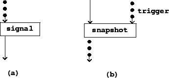

|  |
Figure 3.6 shows how control streams are expressed in block diagrams, using control-to-signal and signal-to-control conversion as examples. Control streams are represented using dots (as opposed to audio signals which appear as solid arrows).
The signal block converts from a numeric control stream to an audio signal. The exact type of conversion isn't specified at this level of detail; in the Pd examples the choice of conversion operator will determine this.
The snapshot block converts from audio signals back to numeric control streams. In addition to the audio signal, a separate, control input is needed to specify the time sequence at which the audio signal is sampled.